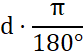
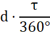
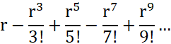
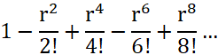

Sinus og Cosinus
Pi π
Pi er en matematisk konstant
det er forholdet imellem en cirkels omkreds og dens diameter,
det vil sige længden divideret med omkredsen
PI's tegn er π
PI's værdi er 3,1415926535
Den har et uendelig mængde af decimaler
Tau 𝜏
Tau er det dobbelte af pi,
i stedet for at være 3.14(afrundet) er tau 6.28(afrundet)
Tau's tegn er 𝜏
Radiants ᶜ
Radiant er en anden måde at finde graderne i en cirkel,
i stedet for at slutte med 360°, slutter Radiant med 2π(pi) eller 𝜏(tau).
Man kan gøre grader om til Radiant ved at bruge den her formel:
d = grader
Hvis man heller vil bruge tau:

Sinus
Sinus er forholdet mellem den modstående katete og trekantens hypotenuse.
Sinus kan omtrentlig gøres om til den her simple serie!
r = Radiant
Hvor flere gange man følger serien vil tallet bliver mere og mere præcist.
Cosinus
Cosinus er forholdet mellem trekantens hypotenuse og den hosliggende katete.
Cosinus kan omtrentlig gøres om til den her simple serie!
r = Radiant
Hvor flere gange man følger serien vil tallet bliver mere og mere præcist.